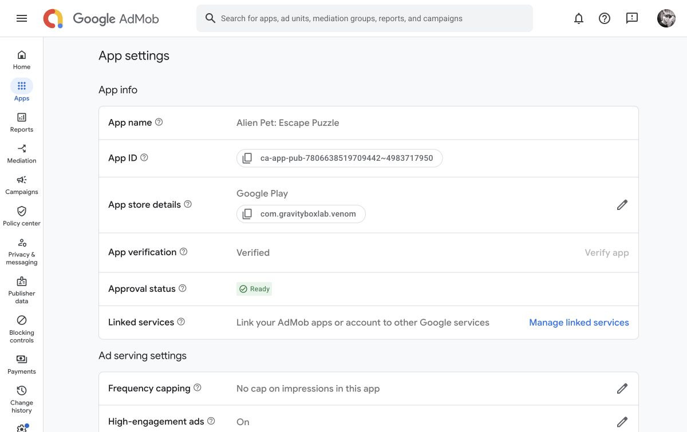
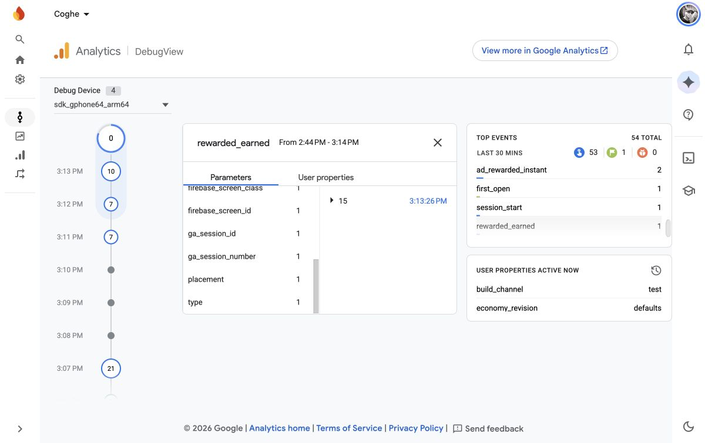
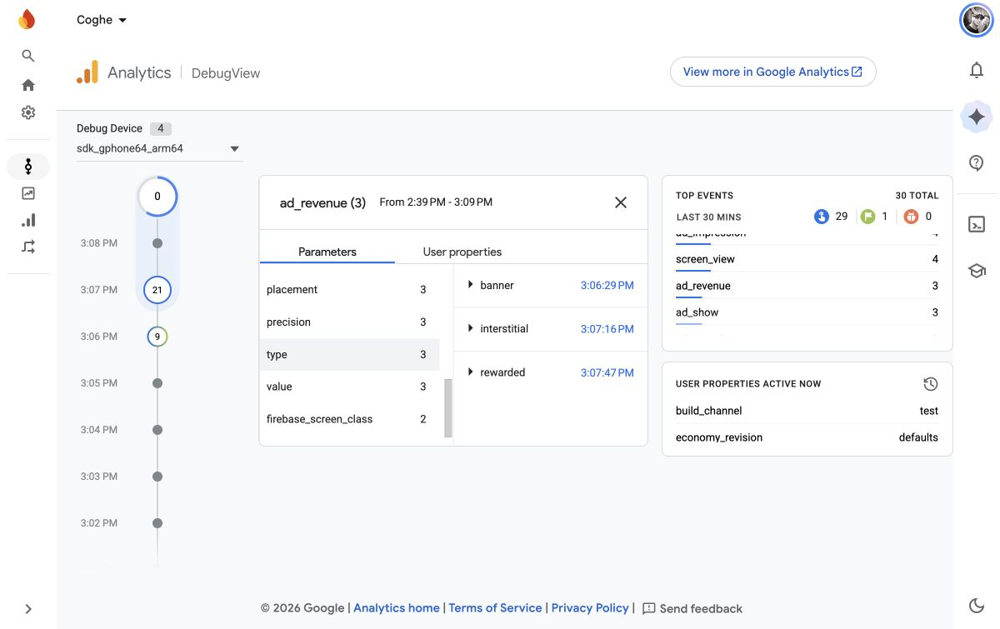

08/11/2026 · Android native SDK + Firebase DebugViewQuảng cáo thưởng, interstitial và doanh thu
Lỗi tracking đã tìm thấy
Game dùng event ad_reward để ghi nhận Drops đã cộng. Firebase dành riêng tên này cho AdMob, nên từ chối event public với error 13. Thưởng trong ví vẫn được cộng; event custom bị mất.
Đổi thành rewarded_earned, gửi amount và placement chỉ sau khi giao dịch thưởng đã được ghi nhận. Sự kiện click banner theo placement đổi thành ad_tap vì ad_click cũng là tên dành riêng. Sự kiện AdMob tự động vẫn được giữ.
No fill: xác nhận và giới hạn kết luận
Bản Google Play 1.0.1 (2) trên OPPO tiếp tục trả mã 3. AdMob đã Verified/Ready, Policy center không có hạn chế. Ad units đúng ID và đúng định dạng; rewarded/interstitial dùng Google optimized → All prices, không có frequency cap ở app hoặc unit. Không có mediation group phụ đang hoạt động.
Quảng cáo demo Google tải và phát được trên thiết bị QA. Những dữ kiện này loại trừ các lỗi cấu hình đã kiểm tra, nhưng không xác định được lý do nội bộ máy chủ cho từng request production: bản Play cũ chỉ ghi mã số. Bản sửa ghi toàn bộ LoadAdError và ResponseInfo tại thiết bị, gửi domain + code qua Analytics khi có quyền.
Chưa thể tuyên bố đã loại bỏ No fill. Không hạ bảo vệ trẻ em, không nới consent hoặc tăng tần suất gọi quảng cáo để ép fill. Quảng cáo test không tạo doanh thu thật.

Kết quả kiểm chứng
| Hạng mục | Kết quả |
|---|
| PlayMode: ví, giao dịch, callback lặp, đóng sớm/lỗi, hạn mức, UI | 12/12 pass |
| Interstitial SDK test | Hiển thị, đóng, giải phóng trạng thái Showing và tiếp tục |
| Rewarded SDK test | SDK báo Reward granted; game cộng đúng 15 Drops; cap = 1 |
| No Ads / Plus fixture | No Ads vẫn xem rewarded tự nguyện; Plus nhận 15 Drops ngay, không mở quảng cáo |
| Callback OnAdPaid | Banner, interstitial, rewarded; 0 USD / precision Unknown của test ads |
| Firebase | ad_show, ad_complete, ad_impression và ad_revenue đã hiện trong DebugView; HTTP upload 204 |
Sau sửa, 15:13:26: game cộng đúng 15 Drops; Firebase DebugView nhận rewarded_earned đúng 1 lần, amount=15. Không còn lỗi reserved event trong log lượt chạy mới.


Cách đọc số liệu sau khi phát hành bản sửa
rewarded_earned xác nhận thưởng trong game. drops_earn với source=ad_shop ghi biến động ví. ad_reward tự động của SDK có thể dùng đơn vị coins riêng, không thay thế đối soát Drops.
ad_revenue là event chẩn đoán từ OnAdPaid, giá trị bằng micros / 1.000.000. Không cộng nó với ad_impression lần thứ hai trong báo cáo doanh thu. Muốn xác nhận doanh thu production dương phải có impression thật được phân phối và chờ báo cáo AdMob xử lý.
OPPO giữ nguyên bản cài Play và save; Analytics vẫn Off. QA dùng AVD AlienPetTablet riêng, synthetic adult opt-in, demo units và Firebase debug mode. Không gửi phiên QA thành doanh thu hoặc chuyển đổi production.
Dữ liệu kiểm chứng · Log và XML test: Artifacts/AlienPetAds20261108.
Firebase error codes · AdMob load errors · OnAdPaid / revenue